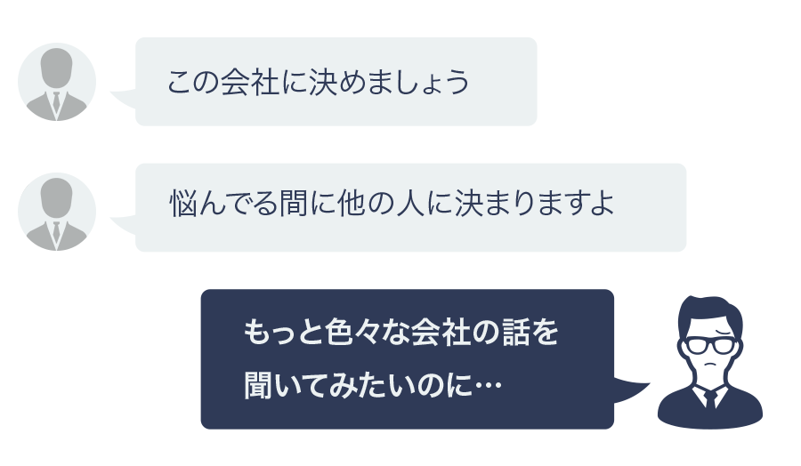

スキルアップできる環境で働きたい
ウィルオブ・テックキャリアでは最新技術やアーキテクチャを使用したユーザードリブンなプロダクト開発から、機械学習、データサイエンス系など、様々な求人を取り扱っているため、将来像から逆算した様々なスキルアップが可能です。
また現時点での経験/スキルから入社可能な会社ではなく、「どうなっていきたいか」でご紹介します。


ウィルオブ・テックキャリアでは最新技術やアーキテクチャを使用したユーザードリブンなプロダクト開発から、機械学習、データサイエンス系など、様々な求人を取り扱っているため、将来像から逆算した様々なスキルアップが可能です。
また現時点での経験/スキルから入社可能な会社ではなく、「どうなっていきたいか」でご紹介します。
ウィルオブ・テックキャリアでは企業情報を多数有しているため、客観的に年収査定を行い、本人の指向性、方向性と合致したうえで、年収が上がるコンサルティングをしています。
そのため今この瞬間だけが「上がる」ではなく、将来的な年収アップのキャリアステップを踏まえた上で年収を上げるためには何が必要か、どのようなキャリアステップを進むべきかロングスパンでアドバイスさせていただきます。
登録した人材紹介会社から求人を紹介されたが、量が多すぎて自分に合う会社がわからなかった…
という経験はありませんか？
私たちは求人票ありきの職業紹介は行いません。
じっくり登録者の方に向き合い、話を聞いて、その人の今後のキャリアアップにつながる仕事だけを紹介していきます。
まだ納得のいく企業に出会えていないのに、
登録した紹介会社に決めるよう急かされてじっくり考える時間が無かった…
という経験はありませんか？
よくある人材紹介会社の場合…
ウィルオブ・テックキャリアの場合


弊社にしかご依頼いただいていない
企業やポジションがあります


 年収
年収 業界
業界 職種
職種機械学習未経験エンジニアからAIエンジニアへキャリチェンジ可能
 年収 業界 職種
年収 業界 職種クラウド（AWS、GCPなど）インフラを要件定義から開発まで経験できます。
年収 業界 職種WEBアプリからモバイルまでの開発スキルを経験できます。
※求人の詳細はお申し込み後、ご連絡させていただきます。
下のフォームから、必須事項をご入力ください。 電話もしくはメールでカウンセリング日程のご連絡を差し上げます。
あなたの希望の条件や今後のキャリアパスについてお話を聞かせてください。
あなたのスキルアップやキャリアアップにつながるお仕事をご提案いたします。
応募に際し、応募書類の添削や面接のアドバイスも行います。
条件交渉や入社日調整などまでバックアップ致します。ご納得いただけましたらお仕事開始となります。

初めまして。
これから、求人をご紹介するために必要なカンタンな質問をさせていただきます。
まず、あなたのお名前(フルネーム)をひらがなでご入力ください。